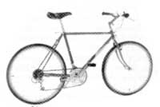

Hoes By Mail
How to order garden tools, bicycles and knives by mail.
By the Mother Earth News editors
July/August 1987
MOM'S MARKETPLACE
A few new products, including some mighty fine weeders.
Almost all of the garden weeders covered in "In Search of the Perfect Hoe " are readily available by mail.
The Kama costs $15.40 from Smith & Hawken. The Magic Weeder with a 5" handle costs $8.50 from Gardener's Supply. (One with a 14" handle goes for $12.) The Ramp and 'Sang Hoe is $13 from Hoedown. The Hand Swan Hoe is $8 from Smith & Hawken or $15.95 from Gardener's Supply. The American Pattern Hoe is $12 from Smith & Hawken. The Stalham Hoe costs $28 from Smith & Hawken. The Garden Hoe is $20 from Hoedown. The Five-Tine Cultivator can be ordered for $25.75 (with handle assist, $31) from Plow & Hearth or for $24.95 from Gardener's Supply. The Swan Hoe is $23.75 for a red one from Plow & Hearth; $23.95 for a blue one from Gardener's Supply. The Stirrup Hoe costs $19.95 from Plow & Hearth (60" handle) and $23 from Smith & Hawken (48" handle).
Smith & Hawken tools are available from Smith & Hawken, 25 Corte Madera, Mill Valley, CA 94941,415/383-4050. Add $3.50 shipping and handling for orders up to $20, $4.50 for orders between $20 and $40, $6 between $40 and $60, $7.50 between $60 and $80, $8.50 between $80 and $100, and $10 for over$100.
Hoedown tools are available from Hoe-down, Rt. 1, Box N146, Newville, WV 26601,307/765-5356. Add $5 shipping and handling for the Garden Hoe, $2 for the Ramp and 'Sang Hoe.
Gardener's Supply tools are available from Gardener's Supply Company, 128 Intervale Rd., Burlington, VT 05401, 802/863-1700. Add $2.50 shipping and handling for orders up to $ 15, $3.50 for orders between $ 15 and $25, $4.80 between $25 and $50, $5.90 between $50 and $75, $7 between $75 and $100, and 7% for orders over $100.
Plow & Hearth tools are available from The Plow & Hearth, 560 Main St., Madison, VA 22728, 703/948-6821. Add $3 shipping and handling for orders up to $20, $4 for orders between $20 and $40, $5 between $40 and $60, $6 between $60 and $80, $7 between $80 and $100, and $7.50 over $100.
The Hoo-Koo-E-Koo is a quality bike bargain.
Hoo-Koo-E-Koo
Though its name translates to "Indians who live at the base of Mount Tamalpais," what Fisher Mountainbikes' new model really means is that you can now have the sort of mountainbike frame geometry we raved about on Gary Fisher's $1,450 Mt. Tarn (reviewed back in issue 86) for $575 (west coast). Equipped with all the latest componentry (Deore SIS shifters and rear derailleurs, for starters), the Hoo-Koo-E-Koo is made in Taiwan according to Fisher design and specifications. That adds up to an expensive bicycle bargain. To get more information, write to Fisher Mountainbikes, 1421 E. Francisco Blvd., San Rafael, CA 94901,415/459-2247.
This buck gives you the goods for the woods.
Backwoods High-Tech
Buck Knives' new titanium lock-back knife epitomizes the current trend in outdoor equipment. Made of the stuff that saves pounds on F-16 fighters, the skeleton-framed model 18600 is no doubt grams lighter for its exotic-metal handle. Assembled with allen screws and equipped with the appropriate wrench, it can be quickly field-stripped for cleaning. The 3½" blade is Buck's usual fine high-carbon, high-chrome tempered steel. The titanium is corrosion resistant, and a belt clip is supplied, so you won't even need a sheath. Check with your Buck Knives dealer.
|
 |
 |
|